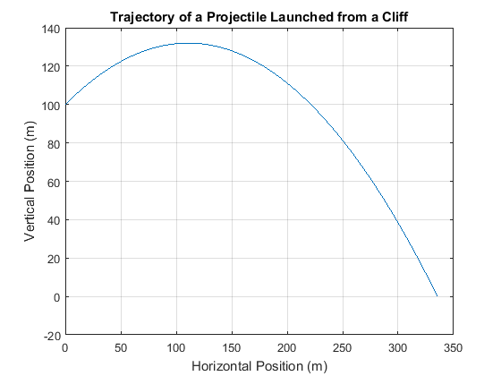
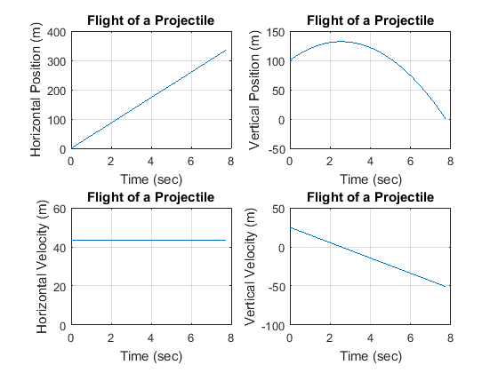

clc
clear
format SHORTE
close all
fprintf('Output for Program_03_2a written by Afeique Sheikh.\n\n')
theta = 30
dt = .01
Vi = 50;
y = 100;
Vy = Vi*sind(theta);
n = 1;
while y>=0
y = y + Vy*dt;
Vy = Vy - 9.8*dt;
n = n+1;
end
x = zeros(n);
y = zeros(n);
t = zeros(n);
V = zeros(n);
Vy = zeros(n);
Vx = zeros(n);
Vy(1) = Vi*sind(theta);
Vx(1) = Vi*cosd(theta);
i=2;
y(1) = 100;
V(1) = 50;
t(1) = 0;
x(1) = 0;
while i<=n
t(i) = t(i-1) + dt;
y(i) = y(i-1) + Vy(i-1)*dt;
Vy(i) = Vy(i-1) - 9.8*dt;
x(i) = x(i-1) + Vx(i-1)*dt;
Vx(i) = Vx(i-1);
i = i+1;
end
fprintf('\nValues at launch:\n')
fprintf(' Time = 0 seconds\n')
fprintf(' x = 0 m\n')
fprintf(' y = 100 m\n')
fprintf(' Vx = %g m/s\n', Vx(1))
fprintf(' Vy = %g m/s\n', Vy(1))
disp(' ')
fprintf('Values at point of contact:\n')
fprintf(' Number of points = %d\n', n)
fprintf(' Time = %g seconds\n', t(n))
fprintf(' x = %g m\n', x(n))
fprintf(' y = %g m\n', y(n))
fprintf(' Vx = %g m\n', Vx(n))
fprintf(' Vy = %g m\n', Vy(n))
figure
plot(x, y)
grid on
title('Trajectory of a Projectile Launched from a Cliff')
xlabel('Horizontal Position (m)')
ylabel('Vertical Position (m)')
figure
subplot(2,2,1)
plot(t, x)
grid on
title('Flight of a Projectile')
xlabel('Time (sec)')
ylabel('Horizontal Position (m)')
subplot(2,2,2)
plot(t, y)
grid on
title('Flight of a Projectile')
xlabel('Time (sec)')
ylabel('Vertical Position (m)')
subplot(2,2,3)
plot(t, Vx)
grid on
title('Flight of a Projectile')
xlabel('Time (sec)')
ylabel('Horizontal Velocity (m)')
subplot(2,2,4)
plot(t, Vy)
grid on
title('Flight of a Projectile')
xlabel('Time (sec)')
ylabel('Vertical Velocity (m)')
Output for Program_03_2a written by Afeique Sheikh.
theta =
30
dt =
1.0000e-02
Values at launch:
Time = 0 seconds
x = 0 m
y = 100 m
Vx = 43.3013 m/s
Vy = 25 m/s
Values at point of contact:
Number of points = 776
Time = 7.75 seconds
x = 335.585 m
y = -0.1765 m
Vx = 43.3013 m
Vy = -50.95 m
 